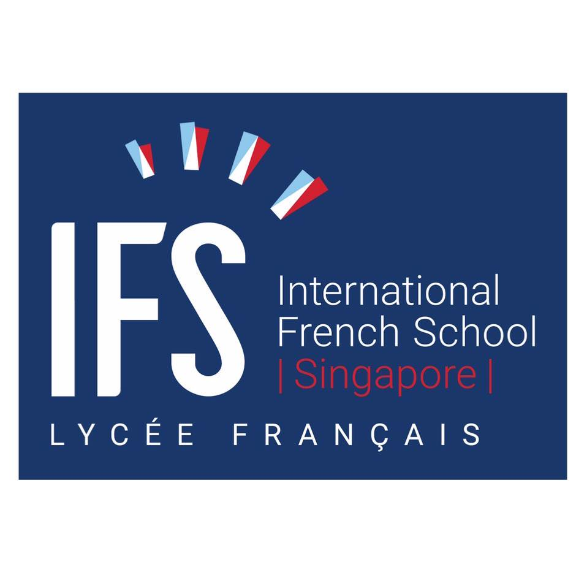

<!DOCTYPE html>
<html lang="en">
<head>
    <meta charset="UTF-8">
    <meta name="viewport" content="width=device-width, initial-scale=1.0">
    <title>Chloe DAULL's website</title>
    <link rel="stylesheet" href="style.css">
    <link rel="icon" type="image/x-icon" href="favicon.ico">
</head>
<body>
    <div id="content"></div>

    <footer>
        <p>Coded in Visual Studio Code by yours truly. Made with 
        <strong>HTML</strong>, <strong>CSS</strong> and <strong>JS</strong> —
        <a href="mailto:chloedaull10@gmail.com">chloedaull10@gmail.com</a></p>
    </footer>

    <script src="script.js"></script>
</body>
</html>

<!-- <!DOCTYPE html>
<html lang="en">
<head>
    <meta charset="UTF-8">
    <meta name="viewport" content="width=device-width, initial-scale=1.0">
    <title>Chloe DAULL's website</title>
    <link rel="stylesheet" href="style.css">
    <link rel="icon" type="image/x-icon" href="favicon.ico">
</head>
<body>
    <section id="hero">
        <div class="container">
                <div class="lang-toggle">
                    <button id="lang-btn">FR/EN</button>
                </div>

            <div class="hero-center">
                
                <h1 id="main-title">Chloe DAULL</h1>
            </div>
            <div class="hero-zones">
                <div id="zone-about" class="zone" data-target="#about_me" data-label="About Me">
                    <div class="zone-title" id="title-about">About Me</div>
                </div>
                <div id="zone-experience" class="zone" data-target="#work_experience" data-label="Experience">
                    <div class="zone-title" id="title-experience">Experience</div>
                </div>
                <div id="zone-projects" class="zone" data-target="#projects" data-label="Projects">
                    <div class="zone-title" id="title-projects">Projects</div>
                </div>
                <div id="zone-contact" class="zone" data-target="#contact" data-label="Contact">
                    <div class="zone-title" id="title-contact">Contact</div>
                </div>
            </div>        
    </section>
    <section id="rest">
            <div class="content">
                <section id="about_me">
                    <h2 id="about-title"> About Me </h2>
                    <p id="about-text">
                    "Hi there!👋 My name is Chloe DAULL, a recent Computer Science Graduate from Concordia Univeristy. <br><br> I love learning about software develpoment, data analytics, Machine Learning and cybersecurity. I have experience coding in Java and Python <br><br> I was born in France, grew up in Singapore and was drawn by the vibrant city of Montreal to pursue a bachelor degree in<br><br></p>
                </section>
                <div class="skills-ticker">
                    <div class="skills-track">
                      <span>HTML</span>
                      <span>CSS</span>
                      <span>JavaScript</span>
                      <span>Python</span>
                      <span>Java</span>
                      <span>SQL</span>
                      <span>Git</span>
                      <span>Machine Learning</span>
                      <span>Azure Functions</span>
                      <span>Power Automate</span>
                      <span>Docker</span>
                      <span>Power BI</span>
                      <span>Power Automate</span>
                      <span>VSCode</span>
                    </div>
                </div>

                <section id="resume" class="resume-section">
                    <h2>Cirruculum Vitae</h2>
                    <p id="resume-description">If you are interested in a technical overview of my skills and experiences, here is access to my </p>
                    <a href="attachements/resume/resumeSept25.pdf" target="_blank" class="resume-button">CV</a>
                </section>

                <section id="work_experience" class="timeline-section">
                    <h2 id="work-title">Work Experiences</h2>
                    <div class="timeline">
                        <div class="timeline-item left">
                            <div class="timeline-content">
                                
                                <h2 id="wsp-title">Programming Intern</h2>
                                <h6>WSP Canada - Laval, QC</h6>
                                <p id="wsp-dates" class="job-date">Jan 2025 - April 2025</p>
                                <p id="wsp-description"> ▶ Developed in-house user-friendly applications designed for company needs, such as making front-end HTML modifications to make the user experience more enjoyable

                                <br></br>▶ Used Azure Functions, Docker, Power Automate and Python to automate client Excel files processing system, saving time and making the team more productive.

                                <br></br>▶ Created a PDF file converter in Python for client contracts that would allow to automatically organize large amounts of documents

                                <br></br>▶ Mainly worked with MS Power Apps, Power BI, JavaScript, HTML and Python</p>
                            </div>
                        </div>
                        <div class="timeline-item right">
                            <div class="timeline-content">
                                
                                <h2 id="bombardier-title">Smart Sales Intern</h2>
                                <h6>Bombardier - Montreal, QC</h6>
                                <p class="job-date" id="bombardier-dates">May 2023 - Aug 2023</p>
                                <p id="bombardier-description"> ▶ Was responsible for keeping track of customer aircraft flight hours and status.
                                    <br></br>▶ Took part in a Case Competition in a team of 4 engineers, presenting an AI integrated plane maintenance model. Leveraged MS PowerApp and PowerBI in finding the best combination of parameters of previous data to forecast future behavior.
                                    <br></br>▶ Involved in organizing cross-functional teams, setting sprint goals, conducting daily stand-ups.
                                    <br></br>▶ Implementing rigorous testing and debugging processes, including unit tests and integration tests, ensuring our software met quality standards.</p>
                            </div>
                        </div>
                  
                      <div class="timeline-item left">
                        <div class="timeline-content">
                            
                            <h2 id="kookmin-title">Summer Intern - Capital Market Division</h2>
                            <h6 id="kookmin-location">Kookmin Bank - Singapore</h6>
                            <p class="job-date" id="kookmin-dates">Jul 2022 - Aug 2022</p>
                            <p id="kookmin-description">▶ Supported senior bankers with market research, data analysis, and financial models to facilitate informed decision-making.
                                <br></br>▶ Played a key role in creating client presentations and pitch materials, maintaining a high standard for company image and professionalism.
                                <br></br>▶ Exhibited strong analytical abilities while preparing balance sheets and conducting risk assessments.</p>
                        </div>
                      </div>
                       
                    </div>
                </section>

                <section id="projects" class="projects-section">
                    <h2 id="projets-title">Projects</h2>
                    <div class="projects-grid">
                      <div class="project-card" style="background-image: url('attachements/images/website.png');">
                        <div class="project-card-text">
                          <h4 id="website-title">Website Portfolio</h4>
                          <p class="project-date">2025</p>
                          <p id="website-description">Designed and developed a fully responsive personal website using HTML, CSS, and JavaScript.</p>
                        </div>
                      </div>
                  
                      <div class="project-card" style="background-image: url('attachements/images/sklearn.png');">
                        <div class="project-card-text">
                          <h4 id="machine-title">Machine Learning Research</h4>
                          <p class="project-date">2024</p>
                          <p id="machine-description">Explored supervised learning models (Decision Trees, SVM) using Python and Scikit-Learn.</p>
                        </div>
                      </div>
                    </div>
                </section>                  
                  
                <section id="Education" class="education-section">
                    <h2>Education</h2>
                      
                    <div class="education">
                        <div class="education-item">
                            <div class="education-content">
                                
                                <h4 id="concordia-titre">Concordia University</h4>
                                <p class="job-date" id="concordia-dates">September 2021 - December 2024</p>
                                <p id="concordia-description">Bachelor in Computer Science with a minor in Economics
                                <br></br>Relevant Courses: Artificial Intelligence, Data Structures and Algorithms, Software Web Development, Object-Oriented Programming, Operating Systems, System Hardware</p>
                            </div>
                        </div>
                      
                        <div class="education-item">
                            <div class="education-content">
                                
                                <h4 id="ifs-titre">Lycée Français de Singapour</h4>
                                <p id="ifs-dates" class="job-date">September 2006 - June 2021</p>
                                <p id="ifs-description">French Baccalaureat - Specialization in Mathematics, Physics, and Chemistry</p>
                            </div>
                        </div>
                    </div>
                    </section>
                    <section id="contact" class="contact-section">
                        <h2 id="lets-connect">Let's Connect!</h2>
                        <div class="contact-icons">
                          <a href="mailto:chloedaull10@gmail.com" target="_blank" aria-label="Email">
                            
                          </a>
                          <a href="https://www.linkedin.com/in/chloe-daull/" target="_blank" aria-label="LinkedIn">
                            
                          </a>
                          <a href="https://github.com/chloedaull" target="_blank" aria-label="GitHub">
                            
                          </a>
                        </div>
                    </section>
            </div>
        </div>
    </section>
    <footer>
        <p>Coded in Visual Studio Code by yours truly. Made with <strong>HTML</strong>, <strong>CSS</strong> and <strong>JS</strong>
        <a href="chloedaull10@gmail.com">chloedaull10@gmail.com</a></p>
    </footer>
</body>
<script>
    const hero = document.getElementById('hero');
    const rest = document.getElementById('rest');

    document.addEventListener('mousemove', (e) => {
        const x = e.clientX / window.innerWidth * 100;
        const y = e.clientY / window.innerHeight * 100;

        hero.style.background = `radial-gradient(circle at ${x}% ${y}%, rgba(100, 100, 100, 0.3) 0%, #091a1a 60%)`;
        rest.style.background = `radial-gradient(circle at ${x}% ${y}%, rgba(100, 100, 100, 0.3) 0%, #091a1a 60%)`;
    });

    document.querySelectorAll('.zone').forEach(zone => {

        zone.addEventListener('click', () => {
            const target = document.querySelector(zone.dataset.target);
            if (target) {
                target.scrollIntoView({ behavior: 'smooth' });
            }
        });
    });

    const timelineItems = document.querySelectorAll('.timeline-item');

    const observer = new IntersectionObserver(entries => {
        entries.forEach(entry => {
            if (entry.isIntersecting) {
                entry.target.classList.add('show');
            }
        });
    }, { threshold: 0.2 }); // 20% visible

    timelineItems.forEach(item => {
        observer.observe(item);
    });
    const translations = {
    en: {
        'main-title': "Chloe DAULL",
        'intro': "Hello, I am a recent graduate from Concordia University",
        'about-title': "About Me",
        'about-text': "Hi there!👋 My name is Chloe DAULL, a recent Computer Science Graduate from Concordia Univeristy. <br><br> I love learning about software develpoment, data analytics, Machine Learning and cybersecurity. I have experience coding in Java and Python! <br><br> I was born in France, grew up in Singapore and was drawn by the vibrant city of Montreal to pursue a bachelor degree in.<br><br>",
        'zone-about': "About Me",
        'zone-experience': "Experience",
        'zone-projects': "Projects",
        'zone-contact': "Contact",
        'resume-description': "If you are interested in a technical overview of my skills and experiences, here is access to my",
        'work-title': "Work Experiences",
        'wsp-title': "Programming Intern",
        'wsp-dates': "Jan 2025 - April 2025",
        'wsp-description': "▶ Developed in-house user-friendly applications designed for company needs, such as making front-end HTML modifications to make the user experience more enjoyable <br></br>▶ Used Azure Functions, Docker, Power Automate and Python to automate client Excel files processing system, saving time and making the team more productive.<br></br>▶ Created a PDF file converter in Python for client contracts that would allow to automatically organize large amounts of documents<br></br>▶ Mainly worked with MS Power Apps, Power BI, JavaScript, HTML and Python",
        'bombardier-title': "Smart Sales Intern",
        'bombardier-dates': "May 2023 - August 2023",
        'bombardier-description': "▶ Was responsible for keeping track of customer aircraft flight hours and status. <br></br>▶ Took part in a Case Competition in a team of 4 engineers, presenting an AI integrated plane maintenance model. Leveraged MS PowerApp and PowerBI in finding the best combination of parameters of previous data to forecast future behavior. <br></br>▶ Involved in organizing cross-functional teams, setting sprint goals, conducting daily stand-ups.<br></br>▶ Implementing rigorous testing and debugging processes, including unit tests and integration tests, ensuring our software met quality standards",
        'kookmin-title': "Summer Intern - Capital Market Division",
        'kookmin-location': "Kookmin Bank - Singapore",
        'kookmin-dates': "Jul 2022 - August 2022",
        'kookmin-description': "▶ Supported senior bankers with market research, data analysis, and financial models to facilitate informed decision-making.<br><br>▶ Played a key role in creating client presentations and pitch materials, maintaining a high standard for company image and professionalism.<br><br>▶ Exhibited strong analytical abilities while preparing balance sheets and conducting risk assessments.",
        'projets-title': "Projects",
        'website-title': "Website Portfolio",
        'website-description': "Designed and developed a fully responsive personal website using HTML, CSS, and JavaScript.",
        'machine-title': "Machine Learning Project",
        'machine-description': "Explored supervised learning models (Decision Trees, SVM) using Python and Scikit-Learn.",
        'concordia-titre': "Concordia University",
        'concordia-dates': "September 2021 - December 2024",
        'concordia-description': "Bachelor in Computer Science with a minor in Economics <br> Relevant Courses: Artificial Intelligence, Data Structures and Algorithms, Software Web Development, Object-Oriented Programming, Operating Systems, System Hardware",
        'ifs-dates': "September 2006 - June 2021",
        'ifs-description': "French Baccalaureat - Specialization in Mathematics, Physics, and Chemistry",
        'lets-connect': "Let's Connect!",
    },
    fr: {
        'main-title': "Chloé DAULL",
        'intro': "Bonjour, je suis une diplômée récente de l'Université Concordia",
        'about-title': "À propos de moi",
        'about-text': "Coucou!👋 Je m'appelle Chloé DAULL, je suis une nouvelle diplômée de bachelor en Sciences Informatique à l'Université Concordia. <br><br> J'adore apprendre les domaines de développement logiciel, d'analyse de données, d'apprentissage automatique, et de la cybersecurité. Je programme principalement avec Java et Python <br><br> Je suis née en France, j'ai grandi a Singapour et j'ai fait mes études post-bac a Montréal<br><br> Je suis fascinée par le monde de l'informatique et du dévelopment logiciel et je cherche toujours a en apprendre d'aventage!",
        'title-about': "Introduction",
        'title-experience': "Expérience",
        'title-projects': "Projets",
        'title-contact': "Contact",
        'work-title': "Mes Expériences",
        'resume-description': "Si un aperçu technique de mes compétences et de mes expériences vous interesse, voici l'accès à mon",
        'wsp-title': "Stagaire en Programmation",
        'wsp-dates': "Jan 2025 - Avril 2025",
        'wsp-description': "▶ Développement d'applications internes conviviales adaptées aux besoins de l'entreprise, telles que des modifications de l'interface HTML pour améliorer l'expérience utilisateur. Participation aux revues de code pour perfectionner mes compétences en programmation auprès de collègues expérimentés.<br><br>▶ Utilisation d'Azure Functions, Docker, Power Automate et Python pour automatiser le traitement des fichiers Excel des clients, permettant ainsi un gain de temps et une amélioration de la productivité de l'équipe.<br><br>▶ Création d'un convertisseur de fichiers PDF en Python pour organiser automatiquement de grandes quantités de contrats clients.<br><br>▶ Travail principalement avec MS Power Apps, Power BI, JavaScript, HTML et Python.",
        'bombardier-title': "Stagiare en Smart Sales",
        'bombardier-dates': "Mai 2023 - Aout 2023",
        'bombardier-description': "▶ Responsable du suivi des heures de vol et de l'état des avions des clients.<br><br>▶ Participation à une compétition de cas en équipe de 4 ingénieurs, présentant un modèle de maintenance aéronautique intégré à l'IA. Utilisation de MS PowerApps et Power BI pour analyser les données et optimiser la prévision du comportement futur.<br><br>▶ Implication dans l'organisation d'équipes interfonctionnelles, la définition des objectifs de sprint et la conduite de réunions quotidiennes (daily stand-ups).<br><br>▶ Mise en place de processus rigoureux de tests et de débogage, incluant des tests unitaires et des tests d'intégration, pour garantir la qualité du logiciel.",
        'kookmin-title': "Stage d'été - divion Marché des capitaux",
        'kookmin-location': "Kookmin Bank - Singapour",
        'kookmin-dates': "Jul 2022 - Aout 2022",
        'kookmin-description': "▶ Soutien aux banquiers seniors dans la recherche de marché, l'analyse de données et la création de modèles financiers afin de faciliter la prise de décision.<br><br>▶ Rôle clé dans la création de présentations client et de documents de prospection, tout en maintenant un haut niveau d'image de marque et de professionnalisme.<br><br>▶ Excellentes compétences analytiques démontrées lors de la préparation de bilans financiers et de l'évaluation des risques.",
        'projets-title': "Projets",
        'website-title': "Site Web Personnel",
        'website-description': "Conçu et développé un site web personnel entièrement responsive en utilisant HTML, CSS et JavaScript.",
        'machine-title': "Projet d’apprentissage automatique ",
        'machine-description': "Exploration de modèles d’apprentissage supervisé (arbres de décision, SVM) en utilisant Python et Scikit-Learn.",
        'concordia-titre': "Université Concordia",
        'concordia-dates': "Septembre 2021 - Décembre 2024",
        'concordia-description': "Baccalauréat en Informatique avec une mineure en Économie<br><br> Cours pertinents : Intélligence Artificielle, Structures de Données et Algorithmes, Développement Web Logiciel, Programmation Orientée d'Objets, Systèmes d'Exploitation, Matériel Informatique",
        'ifs-dates': "Septembre 2006 - Juin 2021",
        'ifs-description': "Baccalauréat Francais - Spécialization en Mathématiques, Physique, et Chimie <br><br> Option Maths Expertes <br><br> Section Européenne: Physique-Chimie",
        'lets-connect': "Restons en contact!",
    }
};

let currentLang = 'en';

document.getElementById('lang-btn').addEventListener('click', () => {
    currentLang = currentLang === 'en' ? 'fr' : 'en'; // Toggle between EN and FR

    for (const id in translations[currentLang]) {
        const el = document.getElementById(id);
        if (el) {
            if (id.includes('zone')) {
                el.setAttribute('data-label', translations[currentLang][id]); // Update data-label for bubbles
            } else {
                el.innerHTML = translations[currentLang][id]; // Update text normally
            }
        }
    }
});


</script>
</html> -->
